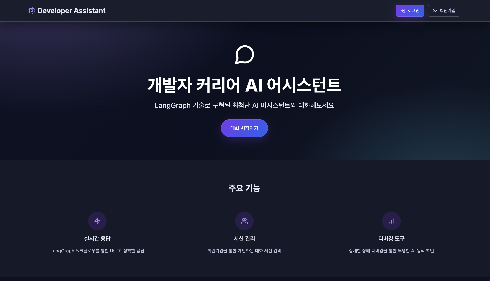
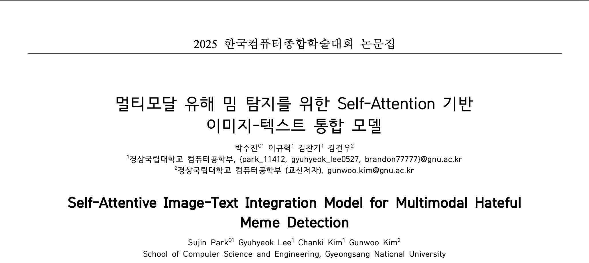
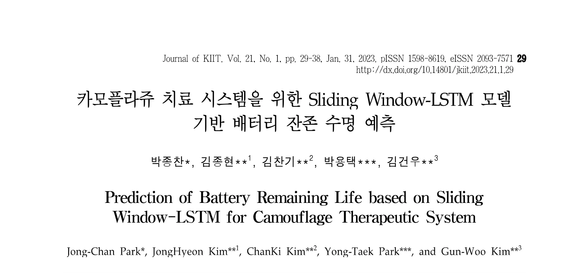
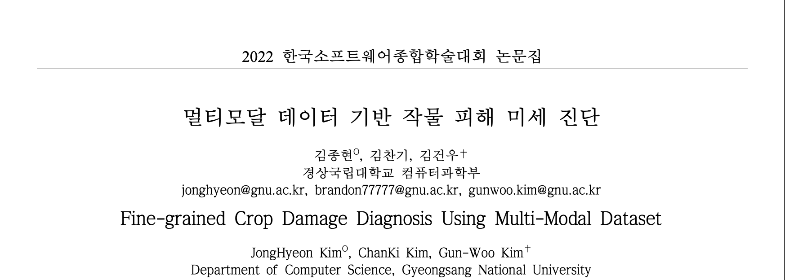
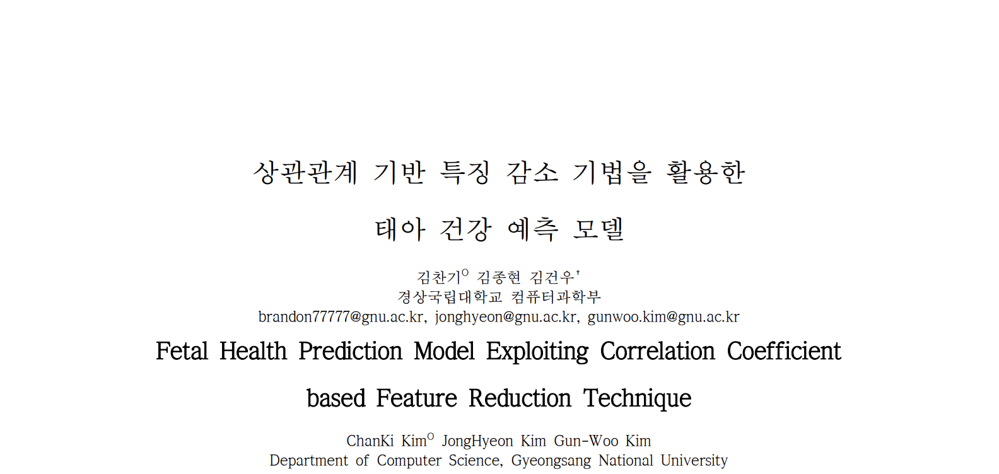

안녕하세요, 저는
문제를 정의하고 효과적으로 개선하는데 집중하는 주니어 AI 엔지니어입니다.
새로운 기술에 흥미를 느끼며, 실제 연구와 프로젝트로 문제를 해결합니다.
문제를 정의하고 효과적으로 개선하는데 집중하는 주니어 AI 엔지니어 김찬기입니다. 새로운 기술을 접하는 것을 두려워하지 않고 오히려 흥미를 느끼며, 단순히 적용하는 것에서 멈추지 않고 실제 프로젝트나 연구에 적용해보며 문제를 해결하는 것을 즐기는 사람입니다.
현재 경상국립대학교 생명정보지능연구실(Bii LAB)에서 학부연구생으로 Multi-Agent Orchestration 및 Multi-Modal 연구를 진행하고 있습니다. 소형 모델들로 효율적인 Workflow를 설계하여 대형 모델의 성능을 뛰어넘는 것을 목표로 합니다.
KCI 등재 논문 1편, 국내 학술대회 논문 4편 실적을 보유하고 있으며, AI 경진대회에서도 꾸준히 성과를 내고 있습니다.
경상국립대학교 생명정보지능연구실 (Bii LAB)
경상국립대학교 IDEA LAB
LINC 3.0 산학공동기술개발과제
경상국립대학교 IDEA LAB
경상국립대학교 (GNU)

논문화 작성 진행 중. 비교적 소형 LLM들의 Multi-Agent 협업으로 개발자의 커리어 성장을 지원하는 시스템 연구.

Self-Attention 기반 이미지와 텍스트가 결합된 복잡한 정보 다각도 추출 및 통합 파이프라인 설계 및 구축.

슬라이딩 윈도우 알고리즘 기반으로 학습 데이터 수를 조정하여 학습하는 방법 제안. 카모플라주 치료 시스템의 배터리 효율 극대화.

식물의 이미지 데이터와 센서 기반 환경 정보 시계열 데이터로 구성된 멀티모달 데이터를 효과적으로 학습하는 CNN-Transformer 구조 제안.

환자 건강 예측 정확도 향상과 진단 시간 감소를 위한 방법론 제안. 상관관계 기반 특징 선택으로 모델 효율 개선.
2025 상반기 향후 채용 AI 경진대회
Hecto
Hecto 인사팀 등록 성과 달성. 기여도 90% 기여.
데이터로 EV를 읽다!
DACON
전체 참가자 중 2등 수상. 기여도 100% 단독 참가.
산업용 장비 오일 상태 분류
AWS · 현대인프라코어
팀 합산 기준 수상권 달성. 기여도 90% 기여.
새로운 기회, 협업, 또는 단순한 인사도 환영합니다.
언제든지 편하게 연락 주세요.
비교적 소형 LLM들의 Multi-Agent 협업 시스템으로 개발자의 커리어 성장을 지원하는 챗봇 연구. 각 에이전트가 정보 분석, 경력 추천, 결과 검증 등 독립적인 역할을 수행하며 협력하는 오케스트레이션 아키텍처를 설계 및 구현. 현재 논문화 작업 진행 중.
SNS에서 확산되는 유해 밈의 이미지-텍스트 복합 특성을 포착하기 위해 Self-Attention 기반 멀티모달 통합 모델을 제안. 이미지 인코더와 텍스트 인코더의 출력을 교차 어텐션으로 융합하여 단일 모달 대비 탐지 성능을 유의미하게 향상시켰으며, KCC 2025에서 일반부문 우수논문상을 수상.
카모플라주 치료 시스템의 안정적 운용을 위해 Sliding Window 기반 LSTM 모델로 배터리 잔존 수명(RUL)을 예측하는 방법론을 제안. 윈도우 크기 조정을 통해 학습 데이터의 다양성을 확보하고 LSTM의 장기 의존성 포착 성능을 극대화. KCI 등재 저널에 게재.
식물 병해충 피해를 조기에 탐지하기 위해 이미지 데이터(CNN)와 온습도·조도 등 환경 센서 시계열 데이터(Transformer)를 결합하는 CNN-Transformer 하이브리드 구조를 제안. 단일 모달 모델 대비 미세 진단 정확도를 향상시켜 스마트팜 환경에서의 적용 가능성을 입증. KSC 2022 학부생부문 장려상 수상.
환자 건강 데이터에서 상관관계 분석을 통해 핵심 특징을 선별하고 모델 복잡도를 줄이면서도 예측 정확도를 유지하는 방법론을 제안. 불필요한 변수를 제거해 학습 효율을 높이고, 임상 환경에서의 빠른 진단 및 의사결정 지원 가능성을 입증. KSC 2022 발표.
Hecto 그룹의 채용 연계 AI 경진대회로, 우수 성과자를 인사팀 채용 풀에 직접 등록하는 방식으로 운영. 팀 내 모델 설계 및 데이터 전처리 파이프라인 구축을 90% 이상 담당하여 Hecto 인사팀 HR 등록 성과를 달성.
전기차의 스펙·배터리 용량·주행거리 등 다양한 피처를 분석하여 시장 가격을 예측하는 회귀 모델을 개발. 단독 참가로 전체 참가자 중 2위를 기록. 피처 엔지니어링과 앙상블 모델링을 통해 높은 예측 정확도를 달성.
건설기계 오일 센서 데이터(점도·산화도·수분 등)를 분석하여 오일 교환 주기를 판단하는 다중 분류 AI 모델을 개발. AWS 클라우드 인프라를 활용해 대용량 센서 데이터를 처리하였으며, 팀 합산 성과 기준 수상권에 진입.